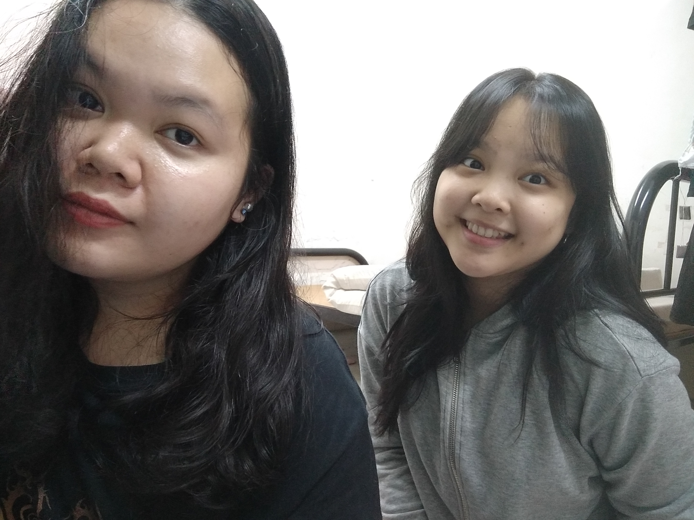

My Life during MCO in UiTM
Hello my name is Cassandra Nickell Bonniface. I am currently in my last semester of Diploma in Information Management in Uitm Kota Samarahan, Sarawak. 18 March 2020 was the first day of Movement Control Order (MCO). So my flight got cancelled on 19 March 2020 because of it. I was disappointed knowing that i could not be there with my family during MCO. I believe other students also feel the same. I have anxiety to stay in college because i know i will feel lifeless here. However, I believe that in every darkness, there's a light. In every struggle, there's a way. There are approximately 694 students stranded in UiTM Samarahan Campus 1 and 320 students in Campus 2. UiTM did a very good job to make sure we are safe and not lack of anything. UiTM provides 3 meals a day (Breakfast, lunch and dinner) and basic necessities.

Even though we are safe in here, but we cannot simply go anywhere. The only places we can go are including College (where we stay), BMart (To buy something), Cafe (To get the food), and ATM (To withdraw money). Staying 24 hours in the room makes me feel stress and lonely. Everyday feels the same. Usually, breakfast will be given around 8:30am. I think it is too early. I always skipped breakfast just to make sure i have enough sleep in the morning because i love to sleep and sleeping is one of my priorities in life. While, for lunch on 12pm and dinner on 5pm, schedule is prepared for us to take turn to get the food from cafe. For example, every tuesday, i will take the food for everyone in my level which is Seri Gading 1B Level 2. The main reason why we have schedule is because of social distancing. It is to prevent us to gather in a big crowd.
If any of my friends or family asked what did i do today, my answer will always be 'Watching a movie or variety show, sleep, eat and repeat'. Luckily, i have a friend that i am close with. Her name is Natashya Uring Daniel. Although we are in a different room, we always spend our time together. In the evening, we always go to BMart to buy ice cream. Sometimes, we walked around the college from Block 1 to Block 4 to release tension and enjoy the fresh air. I am grateful to have her with me here.
P/s: You can watch Korean Variety Shows Here

The best thing i always do is video-calling with my friends and family. My mum never missed to give me a call or send me a text every single day. I know she is definitely missing me and worried about me. I really miss them. At least video-calling with them can reduce the feeling of longing and lonely. I wanted to go back home but after i saw a post in Twitter saying that "YOU ARE NOT STUCK AT HOME, YOU ARE SAFE AT HOME" made me realized that staying here is way better than going to any places in this moment. Since Online learning has started, i feel bit alive because finally i have something to do to keep myself busy. I love being busy rather than doing nothing at all. I hope everything will be back to normal as soon as possible. Stay safe and Stay healthy.